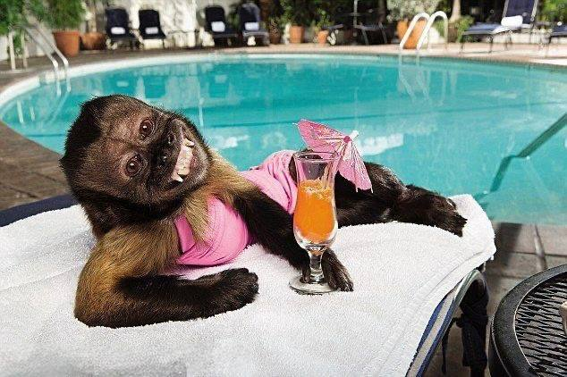

Алєговна, як опитний развєдчік, провела всі розвідувальні дії за першу добу після зустрічі з Льонею.
Все було, як казалось, чисто.
Головне, що Льоня не був одружений. Далі, знайшовши його в Інстаграмі: лайк, переписка і пішло - поїхало.
Льоня пригласив на свіданіє.
Алєговна була в шубі із пєсца, з красною помадою і сумкою від Біркін, яку їй подарував бувший любовнік… було дєло.
А Льоня приїхав на трьохсотому крузаку і забрав Алєговну, яка сяяла від щастя, адже нарешті так повезло в жизні!
Бурний роман зводив з розуму влюбльонну женщіну. Цвєти, Веранда на Днєпрє, вікенд в Мадриді…
Як тут одного разу, Жанна Алєговна відкриває Тік - ток, а там якась шимпанзе танцює біля Льоні під пісню «Цей мужчіна тільки мій, обережно дівчата»…